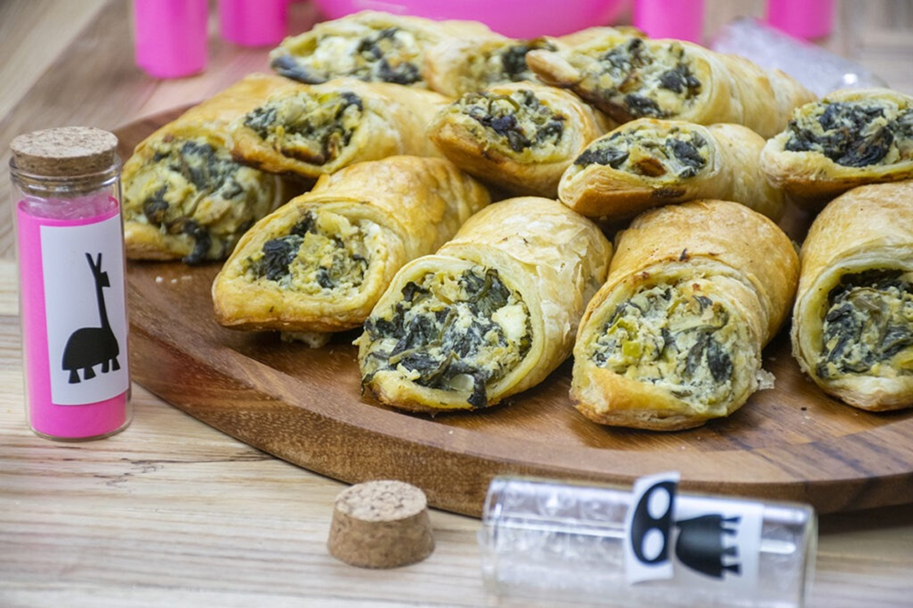

Kronk's Spinach Puffs
Description:
A savory, flaky pastry filled with spinach, cheese, and a touch of garlic—just like Kronk's famous creation!
Ingredients
- 1 sheet puff pastry
- 1 cup spinach (fresh or frozen), cooked & squeezed dry
- ½ cup cream cheese
- ¼ cup feta or parmesan
- Garlic, nutmeg, salt (to taste)
Instructions
- Mix the cooked spinach, cream cheese, feta or parmesan, garlic, nutmeg, and salt to form the filling.
- Cut the puff pastry into squares and place a spoonful of filling in the center of each square.
- Fold the squares into triangles, sealing the edges.
- Brush the top of each puff with an egg wash.
- Bake at 375°F for 15-20 minutes until golden and crispy.